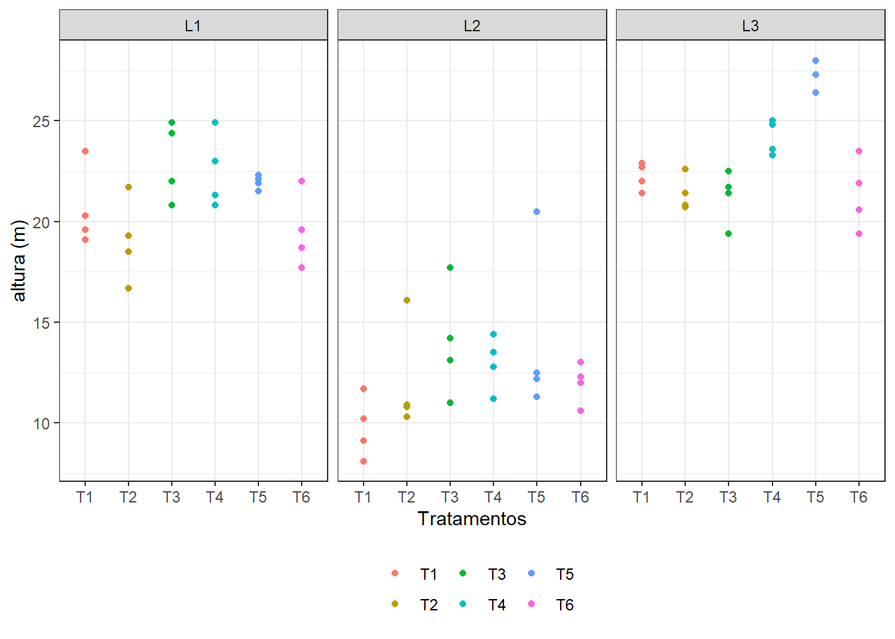
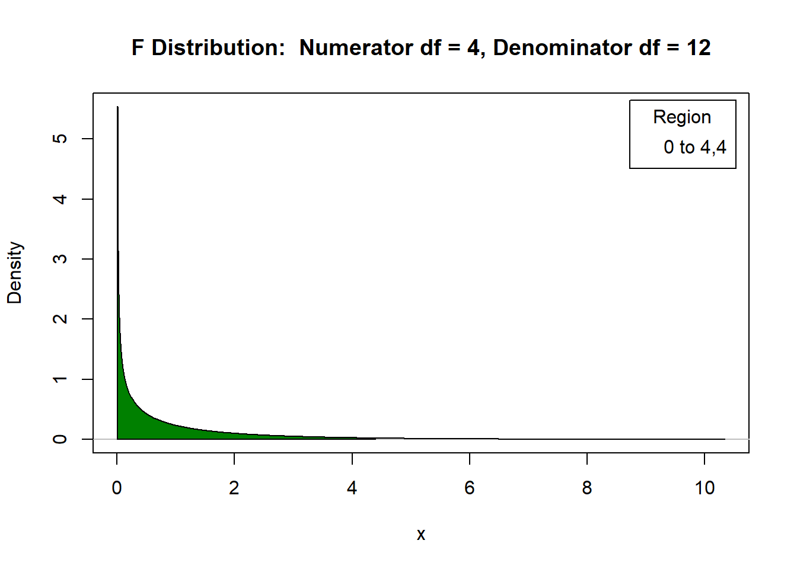
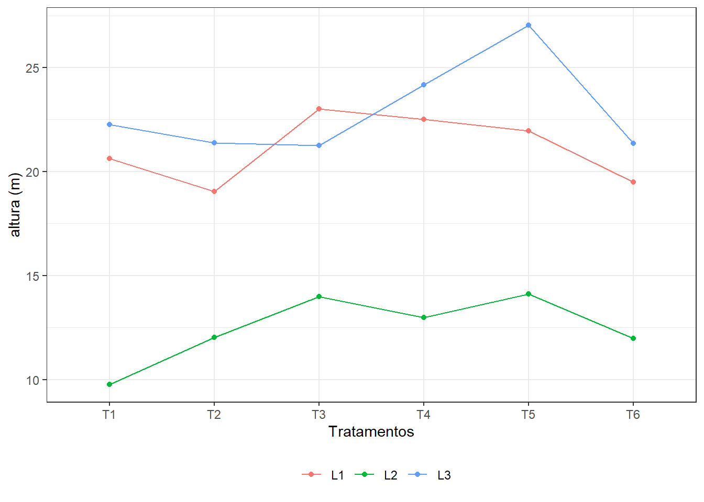
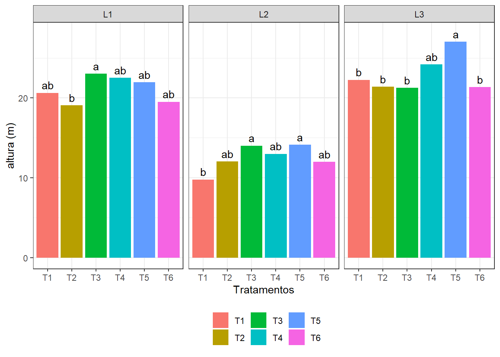

Grupos de experimentos
Exemplo (Barbin, 1994)
Os dados que se seguem referem-se a alturas (em metros, médias de 25 plantas/parcela) de plantas Eucaliptus grandis, com 7 anos de idade (em 1980) de três ensaios em blocos ao acaso, sob 6 tratamentos (progênies).
Tabela 1: Ensaio em Araraquara
| Tratamentos | Bloco I | Bloco II | Bloco III | Bloco IV | Totais |
|---|---|---|---|---|---|
| T1 | 20,3 | 19,6 | 23,5 | 19,1 | 82,5 |
| T2 | 21,7 | 19,3 | 16,7 | 18,5 | 76,2 |
| T3 | 22,0 | 24,9 | 24,4 | 20,8 | 92,1 |
| T4 | 20,8 | 23,0 | 21,3 | 24,9 | 90,0 |
| T5 | 21,5 | 22,3 | 22,1 | 21,9 | 87,8 |
| T6 | 19,6 | 17,7 | 18,7 | 22,0 | 78,0 |
| Totais | 125,9 | 126,8 | 126,7 | 127,2 506,6 |
Fonte: Instituto Florestal – Tupi, SP
Tabela 2: Ensaio em Bento Quirino
| Tratamentos | I | II | III | IV |
|---|---|---|---|---|
| T1 | 10,2 | 11,7 | 9,1 | 8,1 |
| T2 | 16,1 | 10,8 | 10,9 | 10,3 |
| T3 | 17,7 | 13,1 | 14,2 | 11,0 |
| T4 | 13,5 | 14,4 | 11,2 | 12,8 |
| T5 | 20,5 | 12,5 | 11,3 | 12,2 |
| T6 | 12,0 | 13,0 | 12,3 | 10,6 |
| Totais | 90,0 | 75,5 | 69,0 | 65,0 |
Fonte: Instituto Florestal – Tupi, SP
T1: Pretoria (Procedente da África do Sul), T2: 637 (Progênie de Rio Claro), T3: 2093 (Progênie de Rio Claro), T4: 2094 (Progênie de Rio Claro), T5: 9559 (Procedente da Austrália) e T6: 9575 (Procedente da Austrália).
Tabela 3: Ensaio em Mogi-Guaçu -|-|-|-|-|-| Tratamentos | I | II |
III | IV | Totais
T1 | 22,7 | 21,4 | 22,9 | 22,0 | 89,0 T2 | 22,6 | 21,4 | 20,7 | 20,8 |
85,5 T3 | 21,4 | 21,7 | 22,5 | 19,4 | 85,0 T4 | 25,0 | 23,6 | 23,3 |
24,8 | 96,7 T5 | 26,4 | 26,4 | 28,0 | 27,3 | 108,1 T6 | 20,6 | 23,5 |
19,4 | 21,9 | 85,4 Totais | 138,7 | 138,0 | 136,8 | 136,2 | 549,7
T1: Pretoria (Procedente da África do Sul), T2: 637 (Progênie de Rio Claro), T3: 2093 (Progênie de Rio Claro), T4: 2094 (Progênie de Rio Claro), T5: 9559 (Procedente da Austrália) e T6: 9575 (Procedente da Austrália).
Observação: Os dados foram cedidos pelo Engenheiro Agrônomo Luiz Carlos Costa Coelho do Horto Florestal de Tupi, SP.
Entrada dos dados
dadosgrupo<- read.csv2("eucalipto.csv")
str(dadosgrupo)## 'data.frame': 72 obs. of 4 variables:
## $ Local : chr "L1" "L1" "L1" "L1" ...
## $ Bloco : chr "B1" "B1" "B1" "B1" ...
## $ Trat : chr "T1" "T2" "T3" "T4" ...
## $ altura: num 20,3 21,7 22 20,8 21,5 19,6 19,6 19,3 24,9 23 ...Análise exploratória
ggplot(dadosgrupo,
aes(x = Trat,
y = altura,
color = Trat)) +
geom_point() +
facet_wrap(~Local) +
xlab("Tratamentos") +
ylab("altura (m)") +
theme_bw() +
theme(legend.position = "bottom",
legend.direction = "horizontal",
legend.title = element_blank())
Trabalhando com grupos de Experimentos
Os experimentos são instalados em locais distintos ou em tempos distintos (repetição do experimento);
De modo geral, em casos completos e balanceados, os mesmos tratamentos são avaliados em cada um dos experimentos, seguindo o mesmo delineamento e o mesmo número de repetições.
Quando podemos agrupar os dados para a análise?
Em caso de homogeneidade de variâncias!
Vantagens:
Avaliar o efeito da interação Local#Tratamento (ou Repetição#Tratamento - Cuidado!)
Maior número de graus de liberdade do resíduo.
Procedimento
- Realizar a análise de variância individual;
- Obter o coeficiente de variação;
- Avaliar os efeitos de interesse (efeitos de interação e efeitos principais).
ANOVA Local 1: Araraquara
\(H_0: \mu_1 = \mu_2 = \ldots = \mu_6\) vs \(H_1\): pelo menos duas médias diferem entre si
mod.l1<- aov(altura ~ Bloco + Trat,
data=dadosgrupo,
subset=c(Local=="L1"))
# shapiro.test(rstandard(mod.l1))
# bptest(mod.l1)
anova(mod.l1)
Ao nível de 5% de significância, não há evidências para rejeitarmos \(H_0\). Logo, não há efeito significativo de progênie quando avaliado em Araraquara.
ANOVA Local 2: Bento Quirino
\(H_0: \mu_1 = \mu_2 = \ldots = \mu_6\) vs \(H_1\): pelo menos duas médias diferem entre si
mod.l2<- aov(altura ~ Bloco + Trat,
data=dadosgrupo,
subset=c(Local=="L2"))
# shapiro.test(rstandard(mod.l2))
# bptest(mod.l2)
anova(mod.l2)
Ao nível de 5% de significância, não há evidências para rejeitarmos \(H_0\). Logo, não há efeito significativo de progênie quando avaliado em Bento Quirino.
ANOVA Local 3: Mogi-Guaçu
\(H_0: \mu_{T1} = \mu_{T2} = \ldots = \mu_{T6}\) vs \(H_1\): pelo menos duas médias diferem entre si
mod.l3<- aov(altura ~ Bloco + Trat,
data=dadosgrupo,
subset=c(Local=="L3"))
# shapiro.test(rstandard(mod.l3))
# bptest(mod.l3)
anova(mod.l3)
Ao nível de 5% de significância, há evidências para rejeitarmos \(H_0\). Logo, há efeito significativo de progênie quando avaliado em Mogi-Guaçu.
Mais análise exploratória
ggplot(dadosgrupo,
aes(x = Trat,
y = altura,
color = Local,
group = Local)) +
geom_point(stat = "summary",
fun = "mean") +
geom_line(stat = "summary",
fun = "mean") +
xlab("Tratamentos") +
ylab("altura (m)") +
theme_bw() +
theme(legend.position = "bottom",
legend.direction = "horizontal",
legend.title = element_blank())Mais análise exploratória

Análise conjunta: quadro auxiliar combinação Local:Tratamento
- Total
with(dadosgrupo,
tapply(altura, list(Local, Trat),
sum))## T1 T2 T3 T4 T5 T6
## L1 82,5 76,2 92,1 90,0 87,8 78,0
## L2 39,1 48,1 56,0 51,9 56,5 47,9
## L3 89,0 85,5 85,0 96,7 108,1 85,4Análise conjunta: quadro auxiliar combinação Local:Tratamento
- n
with(dadosgrupo,
tapply(altura, list(Local, Trat),
length))## T1 T2 T3 T4 T5 T6
## L1 4 4 4 4 4 4
## L2 4 4 4 4 4 4
## L3 4 4 4 4 4 4Análise conjunta: quadro auxiliar Local
- Total
with(dadosgrupo,
tapply(altura, Local,
sum))## L1 L2 L3
## 506,6 299,5 549,7- n
with(dadosgrupo,
tapply(altura, Local,
length))## L1 L2 L3
## 24 24 24Análise conjunta: quadro auxiliar Tratamentos
- Total
with(dadosgrupo,
tapply(altura, Trat,
sum))## T1 T2 T3 T4 T5 T6
## 210,6 209,8 233,1 238,6 252,4 211,3- n
with(dadosgrupo,
tapply(altura, Trat,
length))## T1 T2 T3 T4 T5 T6
## 12 12 12 12 12 12Razão entre os quadrados médios dos resíduos
(QMResiduo1<- anova(mod.l1)$"Mean Sq"[3])## [1] 3,783111(QMResiduo2<- anova(mod.l2)$"Mean Sq"[3])## [1] 3,755972(QMResiduo3<- anova(mod.l3)$"Mean Sq"[3])## [1] 1,435417(QMResiduo<- c(QMResiduo1, QMResiduo2, QMResiduo3))## [1] 3,783111 3,755972 1,435417(max(QMResiduo)/min(QMResiduo))## [1] 2,635549ANOVA
\(H_0:\)Não há efeito da interação Local#Tratamento vs \(H_1\): Há efeito da interação Local#Tratamento
\(H_0: \mu_{T1} = \mu_{T2} = \ldots = \mu_{T6}\) vs \(H_1\): pelo menos duas médias diferem entre si
\(H_0: \mu_{L1} = \mu_{L2} = \mu_{L3}\) vs \(H_1\): pelo menos duas médias diferem entre si
ANOVA
mod.conj <- aov(altura ~ Local+Local:Bloco+Trat+ Local:Trat,
data=dadosgrupo)
anova(mod.conj)## Analysis of Variance Table
##
## Response: altura
## Df Sum Sq Mean Sq F value Pr(>F)
## Local 2 1490,95 745,47 249,1969 < 2e-16 ***
## Trat 5 135,15 27,03 9,0357 5,3e-06 ***
## Local:Bloco 9 60,99 6,78 2,2652 0,03452 *
## Local:Trat 10 76,57 7,66 2,5596 0,01530 *
## Residuals 45 134,62 2,99
## ---
## Signif. codes: 0 '***' 0,001 '**' 0,01 '*' 0,05 '.' 0,1 ' ' 1Como o efeito da interação entre Locais e Tratamentos foi significativo (\(\alpha = 0,05\)), vamos avaliar o efeito de Tratamentos dentro de cada um dos Locais.
Efeito de Tratamentos dentro de cada Local
\(H_0: \mu_{L1T1} = \mu_{L1T2} = \ldots = \mu_{L1T6}\) vs \(H_1\): pelo menos duas médias diferem entre si
\(H_0: \mu_{L2T1} = \mu_{L2T2} = \ldots = \mu_{L2T6}\) vs \(H_1\): pelo menos duas médias diferem entre si
\(H_0: \mu_{L3T1} = \mu_{L3T2} = \ldots = \mu_{L3T6}\) vs \(H_1\): pelo menos duas médias diferem entre si
Efeito de Tratamentos dentro de cada Local
mod.Tratd.Local<- aov(altura ~ Local +
Local:Bloco +
Local:Trat,
data=dadosgrupo)
anova(mod.Tratd.Local)## Analysis of Variance Table
##
## Response: altura
## Df Sum Sq Mean Sq F value Pr(>F)
## Local 2 1490,95 745,47 249,1969 < 2,2e-16 ***
## Local:Bloco 9 60,99 6,78 2,2652 0,03452 *
## Local:Trat 15 211,72 14,11 4,7183 2,526e-05 ***
## Residuals 45 134,62 2,99
## ---
## Signif. codes: 0 '***' 0,001 '**' 0,01 '*' 0,05 '.' 0,1 ' ' 1Efeito de Tratamentos dentro de cada Local
Cabe salientar que a definição para os número de graus de liberdade irá depender da ordem alfabética dos níveis dos fatores.
# summary(mod.Tratd.Local,
# split=list("Local:Trat"=
# list(Td.L1 = c(1,4,7,10,13),
# Td.L2 = c(2,5,8,11,14),
# Td.L3 = c(3,6,9,12,15))))Efeito de Tratamentos dentro de cada Local
Há evidências para rejeitarmos as três hipóteses \(H_0\). Assim, pelo menos duas médias de tratamentos diferem entre si em cada um dos três locais (há efeito significativo de tratamentos dentro de cada um dos locais).
Comparações múltiplas
- Médias de Tratamentos dentro do Local 1 (Araraquara)
(Tukey.Tratd.L1 <- with(subset(dadosgrupo, Local == "L1"),
HSD.test(altura,
Trat,
45,
3.0)))Comparações múltiplas
- Médias de Tratamentos dentro do Local 1 (Araraquara)
## $statistics
## MSerror Df Mean CV MSD
## 3 45 21,10833 8,205531 3,644814
##
## $parameters
## test name.t ntr StudentizedRange alpha
## Tukey Trat 6 4,208669 0,05
##
## $means
## altura std r se Min Max Q25 Q50 Q75
## T1 20,625 1,978846 4 0,8660254 19,1 23,5 19,475 19,95 21,100
## T2 19,050 2,074448 4 0,8660254 16,7 21,7 18,050 18,90 19,900
## T3 23,025 1,950000 4 0,8660254 20,8 24,9 21,700 23,20 24,525
## T4 22,500 1,856520 4 0,8660254 20,8 24,9 21,175 22,15 23,475
## T5 21,950 0,341565 4 0,8660254 21,5 22,3 21,800 22,00 22,150
## T6 19,500 1,838478 4 0,8660254 17,7 22,0 18,450 19,15 20,200
##
## $comparison
## NULL
##
## $groups
## altura groups
## T3 23,025 a
## T4 22,500 ab
## T5 21,950 ab
## T1 20,625 ab
## T6 19,500 ab
## T2 19,050 b
##
## attr(,"class")
## [1] "group"Comparações múltiplas
- Médias de Tratamentos dentro do Local 1 (Araraquara)
## altura groups
## T3 23,025 a
## T4 22,500 ab
## T5 21,950 ab
## T1 20,625 ab
## T6 19,500 ab
## T2 19,050 bComparações múltiplas
- Médias de Tratamentos dentro do Local 2 (Bento Quirino)
(Tukey.Tratd.L2 <- with(subset(dadosgrupo, Local == "L2"),
HSD.test(altura,
Trat,
45,
3.0)))Comparações múltiplas
- Médias de Tratamentos dentro do Local 2 (Bento Quirino)
## $statistics
## MSerror Df Mean CV MSD
## 3 45 12,47917 13,87954 3,644814
##
## $parameters
## test name.t ntr StudentizedRange alpha
## Tukey Trat 6 4,208669 0,05
##
## $means
## altura std r se Min Max Q25 Q50 Q75
## T1 9,775 1,543535 4 0,8660254 8,1 11,7 8,850 9,65 10,575
## T2 12,025 2,729316 4 0,8660254 10,3 16,1 10,675 10,85 12,200
## T3 14,000 2,801190 4 0,8660254 11,0 17,7 12,575 13,65 15,075
## T4 12,975 1,352467 4 0,8660254 11,2 14,4 12,400 13,15 13,725
## T5 14,125 4,280479 4 0,8660254 11,3 20,5 11,975 12,35 14,500
## T6 11,975 1,007886 4 0,8660254 10,6 13,0 11,650 12,15 12,475
##
## $comparison
## NULL
##
## $groups
## altura groups
## T5 14,125 a
## T3 14,000 a
## T4 12,975 ab
## T2 12,025 ab
## T6 11,975 ab
## T1 9,775 b
##
## attr(,"class")
## [1] "group"Comparações múltiplas
- Médias de Tratamentos dentro do Local 2 (Bento Quirino)
## altura groups
## T5 14,125 a
## T3 14,000 a
## T4 12,975 ab
## T2 12,025 ab
## T6 11,975 ab
## T1 9,775 bComparações múltiplas
- Médias de Tratamentos dentro do Local 3 (Mogi-Guaçu)
(Tukey.Tratd.L3 <- with(subset(dadosgrupo, Local == "L3"),
HSD.test(altura,
Trat,
45,
3.0)))Comparações múltiplas
- Médias de Tratamentos dentro do Local 3 (Mogi-Guaçu)
## $statistics
## MSerror Df Mean CV MSD
## 3 45 22,90417 7,562165 3,644814
##
## $parameters
## test name.t ntr StudentizedRange alpha
## Tukey Trat 6 4,208669 0,05
##
## $means
## altura std r se Min Max Q25 Q50 Q75
## T1 22,250 0,6855655 4 0,8660254 21,4 22,9 21,850 22,35 22,750
## T2 21,375 0,8732125 4 0,8660254 20,7 22,6 20,775 21,10 21,700
## T3 21,250 1,3178265 4 0,8660254 19,4 22,5 20,900 21,55 21,900
## T4 24,175 0,8500000 4 0,8660254 23,3 25,0 23,525 24,20 24,850
## T5 27,025 0,7762087 4 0,8660254 26,4 28,0 26,400 26,85 27,475
## T6 21,350 1,7597348 4 0,8660254 19,4 23,5 20,300 21,25 22,300
##
## $comparison
## NULL
##
## $groups
## altura groups
## T5 27,025 a
## T4 24,175 ab
## T1 22,250 b
## T2 21,375 b
## T6 21,350 b
## T3 21,250 b
##
## attr(,"class")
## [1] "group"Comparações múltiplas
- Médias de Tratamentos dentro do Local 3 (Mogi-Guaçu)
## altura groups
## T5 27,025 a
## T4 24,175 ab
## T1 22,250 b
## T2 21,375 b
## T6 21,350 b
## T3 21,250 bGráfico
Tukey.Tratd.L1$groups$Trat <-
rownames(Tukey.Tratd.L1$groups)
Tukey.Tratd.L1$groups$Local <- "L1"
Tukey.Tratd.L2$groups$Trat <-
rownames(Tukey.Tratd.L2$groups)
Tukey.Tratd.L2$groups$Local <- "L2"
Tukey.Tratd.L3$groups$Trat <-
rownames(Tukey.Tratd.L3$groups)
Tukey.Tratd.L3$groups$Local <- "L3"
Tukey.Trat <- data.frame(rbind(
Tukey.Tratd.L1$groups,
Tukey.Tratd.L2$groups,
Tukey.Tratd.L3$groups
))Gráfico
ggplot(Tukey.Trat,
aes(x = Trat,
y = altura,
label = groups,
fill = Trat)) +
geom_bar(stat = "identity") +
facet_grid(~ Local) +
geom_text(aes(x = Trat,
y = altura + 1)) +
xlab("Tratamentos") +
ylab("altura (m)")Gráfico
